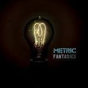
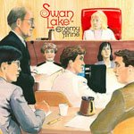
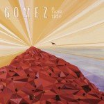
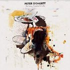
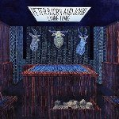

Music Reviews
-

The Thermals Now We Can See
As the Thermals continue wiggling their way from the stylistic confines of punk, they seem to be closing their mitts all the more firmly around its spiritual core. Now We Can See is a power pop record about vision, death, disease, perspective, and, er, turning into a fish (?) but its great expressive anchor is the elated desperation that gives punk both its wickedness and its promise.
Tom Whalen starts shedding his arms... -

Mt. St. Helens Vietnam Band Mt. St. Helens Vietnam Band
Perhaps they're giving their critics too much amo by naming themselves after two complete catastophes. The album itself, though, is not so much a disaster as it is an entertaining mess.
Ryan Faughnder tries not to blow up on... -

Metric Fantasies
Metric: a greatness you can't measure in miles.
Andy Pareti reviews... -

Swan Lake Enemy Mine
Q: Are We Not Bowie? A: We Are Swan Lake!
Sean Caldwell reviews... -

Gomez A New Tide
The new tide feels kind of lukewarm..
Cara Nash dips her toes in... -
Mastodon Crack the Skye
Mastodon gives a crash course in faux Czarist Russian history, and I find myself wishing these guys were my Social Studies teachers in high school.
Andy Pareti thinks Rasputin kicks a lot more ass now... -
Condo Fucks Fuckbook
Underground heroes of the 1990s, Condo Fucks, made a surprise return to the stage in early 2009 in advance of their long-awaited... oh forget it, it's just Yo La Tengo under a different name.
Joe Rivers reviews... -
Bishop Allen Grrr...
The Harvard boys' first album of all new material since the EP project. How is their pure sugar power pop holding up?
Gabriel Keehn gets a tooth ache -

Peter Doherty Grace/Wastelands
It's his first solo release, and he's added an extra 'r' into his name in an attempt to show us all how grown up he's become.
Joe Rivers will be the judge of that... -

Peter, Bjorn and John Living Thing
Despite the title Living Thing, the newest offering from Swedish indie trio Peter, Bjorn and John doesn't breathe so much as click, buzz, and whir. Is there a heart beating beneath all the clanking sounds?
Kevin Liedel tries to figure it out...